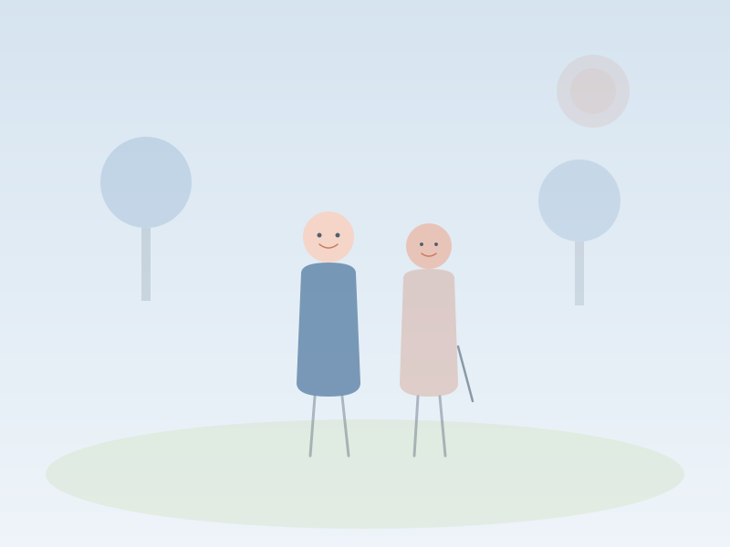

行きたい場所へ、会いたい人のもとへ。
あなたの「したい」を叶えるお手伝い。

「お散歩に行きたいけど一人は不安」「友人との食事に付き添ってほしい」——外出の楽しみを、あきらめないでください。Works Amiのスタッフが一緒にお出かけすることで、安全に、そして楽しく過ごせる時間をつくります。
近所の公園や散歩道まで。ペースに合わせてゆっくり歩きます。
カルチャー教室や地域の集まりなど、趣味の活動への付き添いを行います。
友人との食事や家族の行事など、大切な場へのお出かけをサポートします。
近場の温泉やお花見など、少し遠出のお出かけもご一緒いたします。